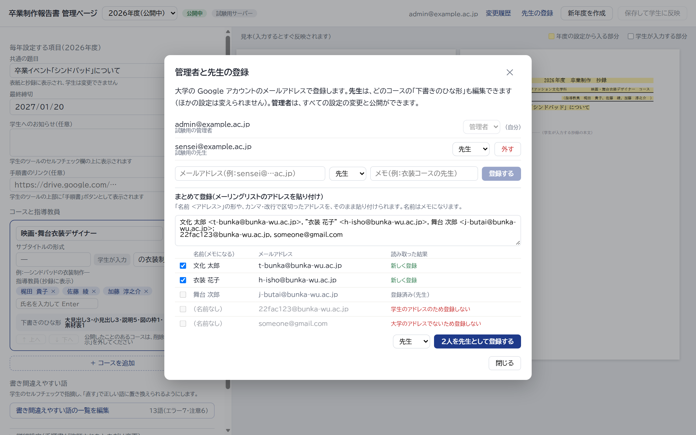
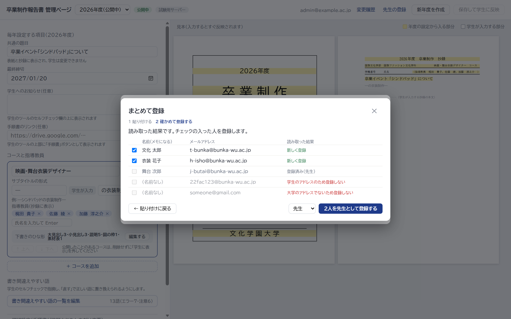
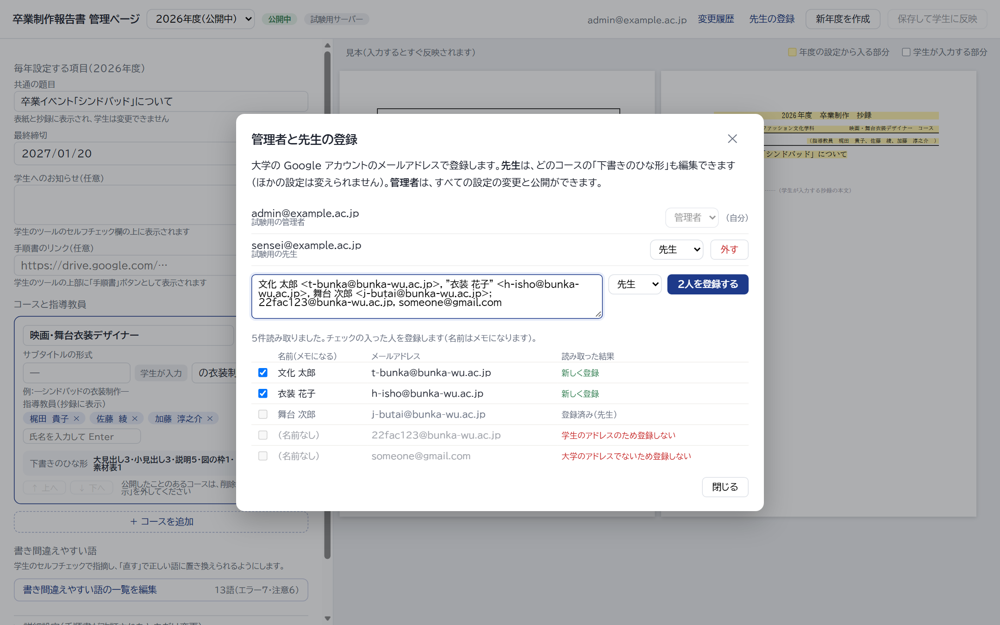

先生をまとめて登録する（管理ページの「先生の登録」）
メーリングリストの宛先（「名前 <アドレス>」の形や、カンマ・改行で区切ったアドレス）をそのまま貼り付けると、名前とアドレスを読み取って一覧にします。名前はメモになります。学生のアドレス（学籍番号の形）と、大学のアドレスでないものは登録しません。すでに登録している人はそのままにします。案ごとに違うのは、貼り付ける場所と、確かめる手順です。
案1 窓の下に「まとめて登録」の欄を置くいつも見えているので気づきやすい。貼り付けると、すぐ下に読み取った結果が出て、そのまま登録できる。窓が縦に長くなる
案2 「まとめて登録…」のボタンから別の窓でふだんの窓はすっきりしたまま。貼り付け → 確かめて登録、の2段階で、間違いに気づきやすい（画像は2段階めの「確かめて登録する」）
案3 今の1人ずつの欄に、何人分でも貼り付けられる欄が1つで済み、1人でも何人でも同じ操作。2人以上を貼り付けたときだけ、下に読み取った結果が出る